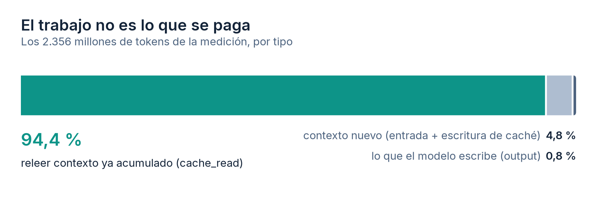
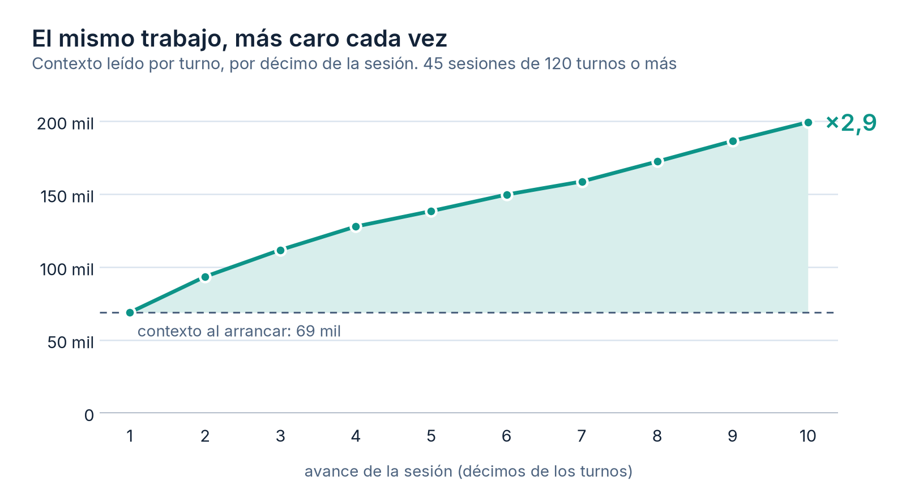
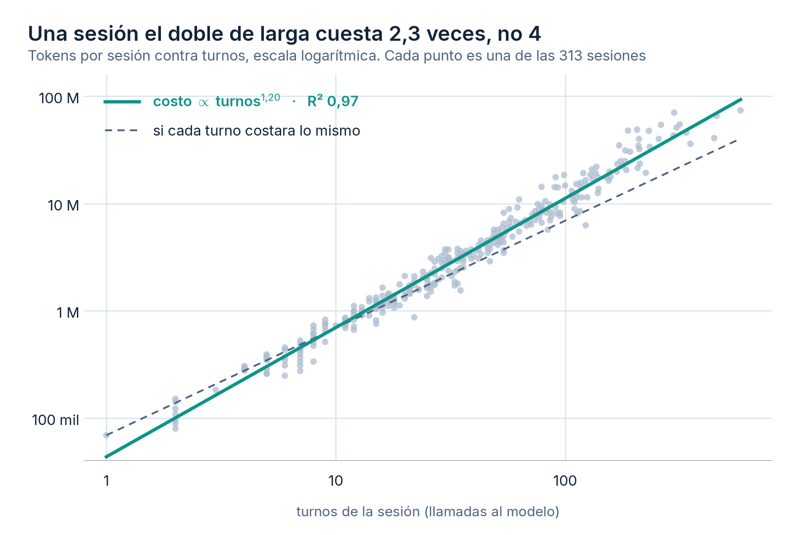
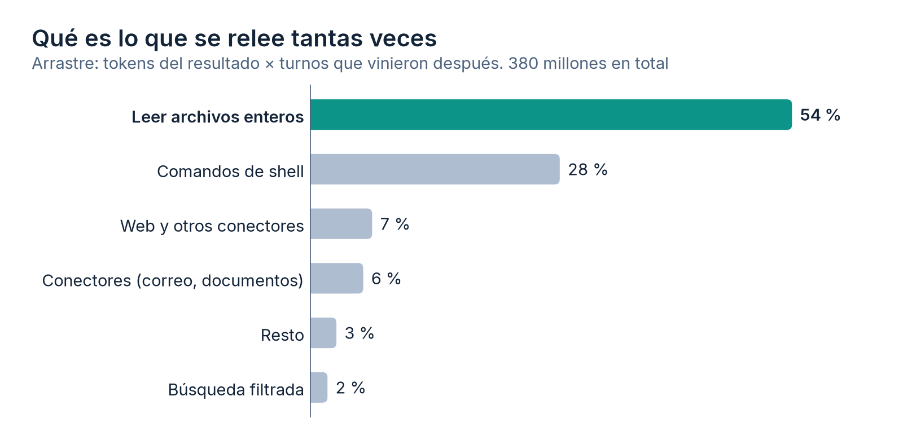

La cuenta empezó a doler antes de que yo entendiera por qué. El trabajo era el mismo de siempre: consultas a una base de producción, reportes, algo de automatización, correo. Nada que sonara caro. Pero el consumo subía y no calzaba con la sensación de estar pidiendo poco.
Así que me puse a medir. Los agentes de código guardan cada sesión como un archivo
.jsonl en el disco, con el detalle de tokens de cada llamada al modelo. Están
ahí, gratis, y casi nadie los abre. Escribí dos scripts que los leen y responden dos preguntas
distintas: cuánto gastó cada sesión y qué llamada concreta infló el contexto.
Lo que salió me hizo cambiar cómo trabajo, y de paso me obligó a corregir una regla que yo
mismo había escrito mal.
Primero: lo que se paga no es el trabajo
La intuición natural es que un agente cuesta según lo que produce. Es exactamente al revés. De 2.356 millones de tokens, lo que el modelo escribió (el código, las respuestas, los análisis) fueron 19 millones. Menos del uno por ciento.

cache_read: contexto que ya estaba ahí y se vuelve a leer en cada turno.La razón es estructural y vale para cualquier agente conversacional, no solo para este. Los modelos no tienen memoria entre llamadas: en cada turno se les vuelve a mandar la conversación completa. Turno 40 significa leer otra vez los 39 turnos anteriores. El caché de prompts abarata esa relectura bastante, pero no la elimina, y sobre todo no cambia el hecho de que la cantidad crece sola mientras usted trabaja.
El mecanismo: el mismo trabajo, más caro cada vez
Este es el gráfico que ordenó el diagnóstico. Tomé las 45 sesiones de más de 120 turnos, partí cada una en diez tramos iguales y promedié cuánto contexto leyó el modelo en cada tramo.

Una sesión arranca leyendo unos 69 mil tokens por turno y termina leyendo 200 mil. Nadie pidió nada más grande al final que al principio. Es la misma pregunta, con más historia detrás.
Promediando la curva completa: cada turno de una sesión larga cuesta cerca del doble de lo que costaría ese mismo turno recién empezada la sesión. Ese es el impuesto, y se paga sin que aparezca en ninguna parte como una línea aparte.
Lo que yo creía, y estaba mal
Cuando hice la primera medición dejé escrita en mis notas una regla que sonaba bien: el costo crece con el cuadrado de la duración de la sesión. El razonamiento era limpio. Si el contexto crece linealmente con los turnos y cada turno lo relee entero, la suma es cuadrática. Una sesión de 300 turnos debería costar cinco veces lo que cuestan cuatro sesiones de 75.
Al ajustar la curva contra las 313 sesiones reales, el exponente no dio 2. Dio 1,20.

La diferencia entre 2 y 1,2 no es un detalle de pizarra, cambia la recomendación. Con exponente 2, partir una sesión larga en diez ahorra el 90 %. Con 1,2 ahorra alrededor de un tercio. Sigue siendo mucho, y un tercio de la cuenta es un tercio de la cuenta, pero es otra conversación.
¿Por qué el modelo teórico se pasó de largo? Por dos cosas que la teoría ignoraba. Hay un piso fijo grande: la primera llamada de cada sesión ya arranca en 59 mil tokens de mediana, antes de que uno escriba nada, porque el preámbulo con las instrucciones del proyecto y las definiciones de herramientas viaja siempre. Ese piso se paga en toda sesión, corta o larga, y diluye la parte que crece. Y las sesiones largas tampoco crecen para siempre: chocan con el límite de la ventana y el historial se compacta.
Lo dejo escrito porque es la parte que normalmente no se publica: la regla que yo estaba aplicando venía de un razonamiento correcto sobre un supuesto falso. El número la corrigió. Un modelo mental que nadie contrasta contra datos propios se vuelve folklore técnico bastante rápido.
De dónde sale el volumen
Saber que se paga por releer no dice qué es lo que hay que dejar de leer. Para eso hice la segunda medición, que es la que de verdad sirve para tomar decisiones.
Cada resultado de una herramienta (el contenido de un archivo, la salida de un comando, una búsqueda de correo) entra al contexto y se queda ahí. Su costo real no son sus tokens: son sus tokens multiplicados por los turnos que vinieron después. Un volcado de 20 mil tokens en el turno 3 de una sesión de 80 sale más caro que uno de 100 mil en el último turno. A eso le llamo arrastre, y ordenar por esa columna en vez de por tamaño cambia por completo el ranking de culpables.

El 54 % es leer archivos enteros. Y dentro de eso, la mayor sorpresa: buena parte no eran archivos de código, sino los archivos de memoria del propio agente. Las notas que uno acumula para que el asistente sepa cómo funciona el negocio. Cada vez que una de esas notas se vuelve relevante se carga completa, y las que había dejado crecer sin control pasaban de 9 mil tokens cada una. El sistema que existía para hacer al agente más eficiente era la principal fuente de gasto variable.
El patrón: filtrar antes de traer, no después
Todo lo anterior converge en una sola regla operativa, y es aburridamente simple: lo que entra al contexto se paga muchas veces, así que hay que filtrarlo antes de que entre. No después, no resumiéndolo en el turno siguiente. Cuando el archivo ya está adentro, el daño está hecho para todo el resto de la sesión.
En la práctica eso significó escribir una capa fina de lectura filtrada. Un lector que busca por expresión regular con contexto, con un tope duro de caracteres a pantalla y el contenido completo volcado a un archivo temporal por si hace falta. Es poco código y no tiene ninguna gracia intelectual. El efecto sí:
| Listar los últimos seis correos | tokens que entran al contexto |
|---|---|
| Conector de correo estándar | 2.730 (promedio de 190 llamadas) |
| Lector local filtrado | 258 |
Un orden de magnitud, para el mismo dato en pantalla. Y como el ahorro se multiplica por todos los turnos que vengan después, en una sesión de 100 turnos esa sola decisión son unos 250 mil tokens que no se pagan.
Las otras tres que quedaron como hábito, en orden de cuánto rindieron:
- Sesión nueva por tema. La palanca más grande, con diferencia, y la que más cuesta obedecer porque siempre parece que el contexto acumulado va a servir. Casi nunca sirve, y se paga entero en cada turno hasta el final. En mis datos, las 142 sesiones de 30 turnos o menos son el 45 % de las sesiones y el 7 % del gasto; las 20 más largas se llevan el 39 %.
- Las salidas grandes van a archivo, nunca a la conversación. Un reporte,
un volcado de tabla, un log: al disco, y a la conversación el resumen o un
head. Llegué a encontrar un resultado de 132 mil tokens en un solo turno; eso envenena todo lo que venga después. - Buscar en vez de leer.
grepcon número de línea y después el rango exacto, en lugar de abrir el archivo completo para cambiar tres líneas. Las búsquedas amplias van a un subagente, que trabaja en su propio contexto y devuelve solo la conclusión.
Hay una que evalué y descarté: compactar el historial de forma preventiva al llegar a la mitad de la ventana. Ahorra, sí, pero comprime justo el detalle fino (cifras exactas, estado de los archivos) y en trabajo con datos de producción ese detalle es lo único que no puedo permitirme perder por una síntesis mediocre. Además ataca el síntoma. Si la sesión se está poniendo pesada, terminarla y abrir otra sale mejor que resumirla a ciegas.
Cómo medirlo en su operación
Nada de esto necesita instrumentación especial ni un proveedor que le entregue telemetría.
Los transcripts están en su disco y traen el bloque usage de cada llamada, con
input, output y tokens leídos de caché. Un script de doscientas líneas los recorre y le arma
el ranking de sesiones. Otro atribuye cada resultado de herramienta a su llamada y lo
multiplica por los turnos posteriores.
Lo importante no es el script sino el orden de las preguntas, y son tres:
- ¿Qué proporción del gasto es relectura y no producción? (Si le da menos de 80 %, revise la medición.)
- ¿Cuánto crece el contexto por turno dentro de una misma sesión, de principio a fin? Ése es el impuesto, y es el que decide si conviene cortar sesiones.
- ¿Qué llamadas concretas tienen más arrastre? Ahí está la lista de cosas que hay que aprender a leer filtradas.
Los míos corren con una fecha de corte fija, para que la ventana sea reproducible y no se mueva cada vez que se ejecuta el script. Ninguno de los dos es largo, unas doscientas líneas cada uno, y las tres preguntas de arriba importan más que el código: lo que sirve es el ranking de las transcripciones propias, no el mío.
Por qué importa fuera de mi máquina
Estas mediciones salen de una sola persona trabajando en una empresa del sur de Chile. No son un estudio. Pero el mecanismo no depende de la escala, y las empresas que este año empezaron a poner agentes a trabajar en serio se van a topar con lo mismo cuando llegue la primera factura que no calza con la intuición.
La conclusión que me llevo es que la disciplina de contexto se parece mucho más a la gestión de memoria de los años noventa que a la ingeniería de prompts. No se trata de escribir mejores instrucciones. Se trata de decidir, con criterio y a veces con dolor, qué es lo que no entra.
Y de medirlo, porque el que no mide su contexto termina pagando por leerlo.